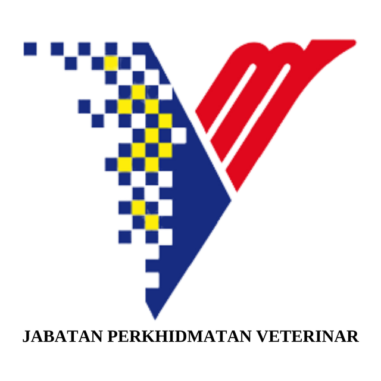
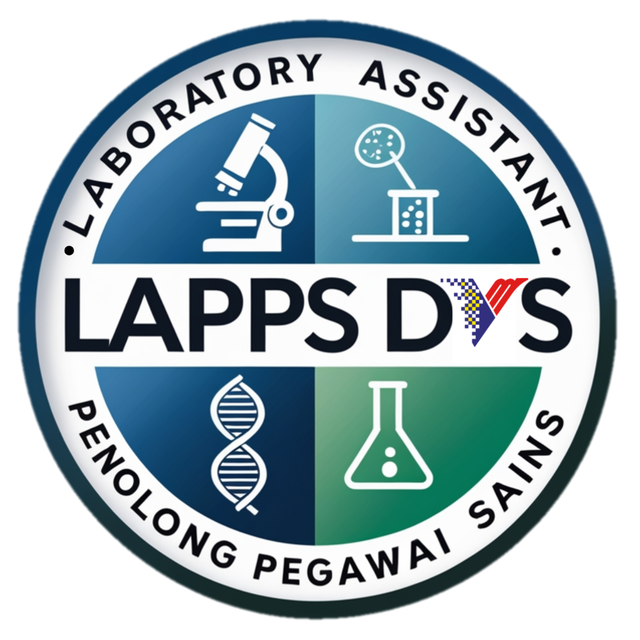

Bukan robot yang menggantikan kerja kita — tapi rakan kerja yang boleh tolong fikir, tulis, semak dan susun, supaya masa kita lebih banyak untuk kerja teknikal dan operasi makmal yang sebenar.
Sebelum kita fokus kepada Claude, baik kita kenali dulu beberapa AI assistant popular yang mungkin sudah pernah anda dengar atau guna.
Paling dikenali ramai orang, pelopor chatbot AI mainstream. Kuat untuk perbualan umum, brainstorming, dan pelbagai plugin/integrasi pihak ketiga.
Terbina terus dalam Google Workspace — Gmail, Docs, Sheets. Sesuai untuk yang dah biasa guna ekosistem Google dalam kerja harian.
Alat AI berasaskan sumber/dokumen sendiri — upload nota atau SOP, ia jana ringkasan, panduan ulang kaji, kuiz, malah audio overview daripada dokumen tersebut.
Dikenali kuat dalam penulisan, analisis dokumen panjang, dan memahami konteks Bahasa Melayu dengan baik. Fokus kita untuk hands-on hari ini.
Kenapa Claude untuk sesi hands-on hari ini? Bukan sebab yang lain tak bagus — tapi sebab senang untuk pemula, free tier mencukupi untuk kegunaan harian, dan kuat dalam tugasan Bahasa Melayu/dokumen yang relevan dengan kerja makmal kita.
Tak perlu install software berat atau setting rumit. Claude boleh terus digunakan dari browser atau telefon.
Pergi ke claude.ai, daftar guna emel (Google/Outlook pun boleh). Percuma untuk mula guna.
Macam WhatsApp — taip apa yang nak ditanya atau minta dibuat, dalam Bahasa Melayu pun boleh.
Boleh upload gambar, PDF, Excel atau Word terus dalam chat untuk Claude baca dan analisa.
Tip: Claude App (mobile) sesuai untuk soalan cepat di makmal — contoh, snap gambar label spesimen dan tanya terjemahan atau maksud singkatan teknikal.
Tujukan kamera telefon ke kod QR platform pilihan anda. Semua percuma, tiada kad kredit diperlukan.
Daripada tugasan pentadbiran sampai ke analisis data — berikut contoh sebenar yang relevan dengan kerja PM/PPS.
Draf laporan aktiviti, minit mesyuarat, surat rasmi, atau emel rasmi dalam BM yang kemas dan formal — siap dalam saat.
Upload Excel keputusan ujian / rekod sampel, suruh Claude rumuskan trend, kira purata, atau buat carta ringkas.
Tanya soalan tentang SOP makmal, prosedur biosafety, atau istilah sains veterinar — dapat penjelasan ringkas berdasarkan dokumen rujukan sendiri.
Bina skrip ringkas (Google Sheets/Forms) untuk tracking sampel, jadual penggunaan peralatan, atau borang permohonan — tanpa perlu jadi programmer.
Lima ciri ini yang paling kerap akan digunakan dalam konteks kerja makmal dan pejabat.
Copy prompt di bawah, tampal ke A.I pilihan anda, kemudian gantikan bahagian dalam [ ] dengan kandungan kerja sebenar anda.
AI sangat berguna, tapi bukan sempurna. Beberapa garis panduan supaya guna AI dengan selamat dan berkesan.
A.I boleh tersilap fakta atau nombor (dipanggil "hallucination"). Untuk data penting (keputusan ujian, angka rasmi), sentiasa verify sebelum guna.
Elakkan upload maklumat sulit/rasmi (data pesakit, dokumen sulit kerajaan) tanpa kebenaran — ikut SOP keselamatan data pejabat.
Bagi konteks lengkap: siapa audien, tujuan, format yang diingini. Contoh: "Tulis dalam BM formal untuk surat rasmi ke JPV" lebih baik dari "tulis surat".
Keputusan teknikal dan saintifik tetap perlu pertimbangan profesional kita — Claude alat sokongan, bukan pegawai sains.
Tidak — Claude direka untuk menambah keupayaan kita, bukan menggantikan. Kerja makmal dan sains veterinar memerlukan pengetahuan domain, pertimbangan profesional, dan kemahiran fizikal yang AI tidak boleh lakukan. Claude hanya bantu bahagian pentadbiran dan penulisan supaya kita lebih fokus pada kerja teknikal sebenar.
Anthropic (syarikat di sebalik Claude) mempunyai polisi privasi yang ketat. Namun, sebagai amalan terbaik: jangan taip maklumat sulit rasmi, nombor pesakit, atau data sensitif kerajaan ke dalam mana-mana sistem AI tanpa kebenaran pegawai atasan. Guna data dummy atau ringkasan umum bila perlu.
Akaun percuma A.I sudah cukup untuk kebanyakan tugasan harian — draf surat, ringkasan dokumen, terjemahan, analisis data ringkas. Versi Pro (berbayar) memberi lebih banyak mesej sehari dan akses ke model terkini, tapi tidak wajib untuk bermula. Cuba free dulu!
Dua cara terbaik: Pertama, berikan lebih konteks — "Jawapan tadi kurang tepat, saya maksudkan X, bukan Y. Cuba semula." Claude akan betulkan. Kedua, minta rujukan — "Boleh nyatakan sumber atau asas jawapan ini?" Jika AI tidak pasti, dia akan beritahu. Ingat: AI adalah draf pertama, bukan keputusan muktamad.
Tak perlu tunggu "masa sesuai". Berikut 4 langkah ringkas untuk setiap peserta cuba sendiri selepas sesi ini.
Guna emel pejabat atau peribadi. Ambil masa kurang 2 minit.
Contoh: draf satu emel rasmi, atau ringkaskan satu dokumen panjang.
Nyatakan tujuan, audien, dan format — semakin spesifik, semakin tepat hasilnya.
Semak hasil sebelum guna rasmi. Kongsi dengan rakan sekerja apa yang berjaya — kita belajar bersama.